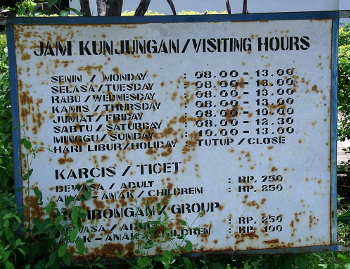
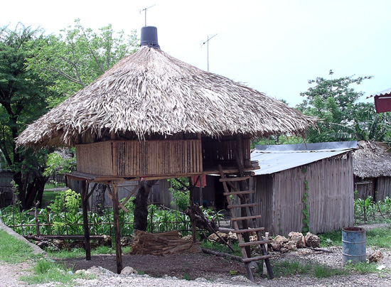

Kupang is the largest city in West Timor, but really sprawls out as it has no high rise structures. One might reasonably expect to meet other travelers here, as it's proximity to Timor Leste would draw those making a visa run*. Such was not the case, however. In my three days in town, only one time did I see forigners -- from the Check Republic, and they seemed to be working in town. Even tourist attractrions such as the traditional arts museum were closed down during "normal visiting hours" (see photo).
With so little to hold my interest, decided to renew my visa by crossing over to Timor Leste first, then take a trip down to Roti, the southernmost point in Indonesia after returning in a couple of weeks.
Decided to break the journey up by stopping in Atembua for an afternoon.
Got an early start, as this is the day I go to East Timor. Instructions from the guesthouse were to go to market and take microlet for Moaien. As luck would have it, a microlet was cruizing throuogh the market that looked full, so I asked if it went to Moaien, the border post. The reply was affirmative, and pasengers started shifting to let one more body with Big pack in. Great, I thought, now we won't have to cruze all over town, and will make a rather quick trip to the border. Wrong. First stop was the gas station on the outskirts of town. Two more people pile in. Only had eight cycles in front of us. 20 minutes later, we were on our way back to town. Stopped to pick up building supplies -- including a 40 KG sack of cement which was plopped right next to me, dust and all. Then to the other side of town to pick up produce for one of the passengers. A 50 Kg sack of rice went on the roof. After some 45 minutes, we actually drive right by my hotel!
Arrived at the border post some 90 minutes after leaving town for the 1-hour ride.



Photos from upper right: This traditional home is high above the ground; A loaded jackfruit tree.
* Visa run: Exiting a country for the primary reason of obtaining a new visa for the same country. This is common in several Southeast Asian countries that limit the length of stay on a tourist visa.